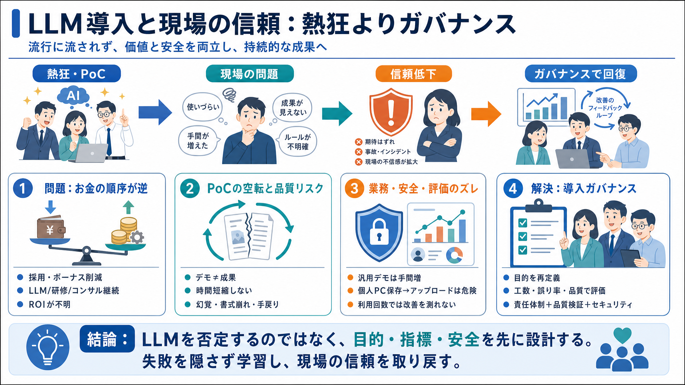

The Challenges of Enterprise AI and LLM Adoption — Part 1 - Medium
In this first installment, we'll dive into the realms of Regulation, Governance, Hallucination, Algorithmic Bias, and th…

職場のLLM活用（ChatGPT/Copilotなど）は、技術より「目的・検証・安全・予算配分」を外すと、現場の納得感と信頼を損ねる。
財務が逼迫して採用停止やボーナス削減が進む一方で、コンサル・研修・LLMライセンスは継続。配分の合理性が問われる。
「登録→数か月試行→成果発表」は回るが、結果として動かない／時間短縮しない／複雑化する。成功事例がゼロという主張。
プロンプト工夫・カスタムGPT・テンプレ整備でも、出力の不正確さ、幻覚（hallucination）、入力・編集の失敗が残る。
「気分・感情を聞く」「社内カフェメニューを読ませる」などは入力・アップロード・待ち時間が増え、即時処理をわざわざ複雑化する。
不審メール判断のために、添付を個人PCへ保存してLLMへアップロードする案は、情報漏えい・規程違反・リスクの誘発につながり得る。
「とりあえず使った」「探索した」を成果に置き換えると、時間短縮・品質向上・誤り率などの業務指標に結びつかない。
Dunning-Kruger効果の増幅（自信過剰）が起きると、推進者が成果の感覚に囚われ、検証が軽視されやすいという指摘。
導入失敗は技術問題に限定されない。業務要件に合わせたデータ管理・権限制御・品質評価・フロー統合が必要だという整理。
本文はLLMそのものの否定というより、「導入ガバナンスの欠落」を告発していると読むのが妥当、という見立て。
同種の失敗を避けるには、デモで勝つのではなく業務指標で勝つ。さらに情報資産の領域では手順と責任を先に整える。
バブル崩壊やコスト増で一般利用が難しくなったとき、組織は言い訳だけでなく、目的・指標・安全の再設計で信頼を回復できるかが焦点になる。
In this first installment, we'll dive into the realms of Regulation, Governance, Hallucination, Algorithmic Bias, and th…
Continuing from the first chapter on the challenges of adopting Large Language Models (LLMs) in business, we're turning …
Recognized as a Leader in Endpoint Protection Platforms for the 21st Consecutive Time. We challenge assumptions about AI…
Here’s a problem if you’re hoping a technology-driven productivity upturn will soon supercharge the American economy: Ar…
[](https://www.ibm.com/think/insights/ai-adoption-challenges). During the last two years, many companies were focused on…